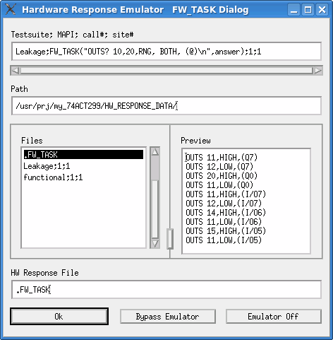

FW_TASK type
The Hardware Response Emulator FW_TASK Dialog window opens when the
FW_TASK(command, answer) API is executed offline using the emulator in "Store"
mode.

To create a hardware response file for the FW_TASK API:
- Click OK without performing any operations in this dialog. Then the
firmware commands specified with the command parameter of the
FW_TASKaPI is executed offline, and the result is saved in the hardware response file. - Edit the hardware response file using a text editor if required.
Testsuite; MAPI; call#; site# |
This field displays the test suite name and test method API that takes the hardware response data specified in this dialog. The expression in this field is similar to the one in the ARRAY_X type. If you need to include a double quote in the command, escape it with a backslash (like this \"). |
Path |
This field contains the path to the directory whose contents is displayed in the Files list. When this dialog is opened, the path of the current hardware response directory is displayed. |
Files |
This field lists the files in the directory specified in the Path field, allowing you to browse existing hardware response files. When this dialog is opened, a temporary file You can also select another file from this list. The selected file becomes the active
hardware response file with the name |
Preview |
This field displays the contents of the selected Hardware Response File. If the file contains a large amount of data such as waveform data, only the first 2048 bytes are shown. If SmarTest determines the selected file to be an ASCII file, the contents of the file are displayed as ASCII characters. If a non-printable ASCII character is found in the selected file, the part before it is displayed as ASCII characters, and the part after it is displayed as hexadecimal code (0xXX). |
HW Response File |
This field displays the hardware response file name that is assigned to the execution shown in the Testsuite; MAPI; call#; site# field. This parameter is similar to the one in the ARRAY_X type. |
OK |
Same as for ARRAY_X type. |
Bypass Emulator |
|
Cancel Emulator |
Functional changes
- Introduced before SmarTest 6.3.2